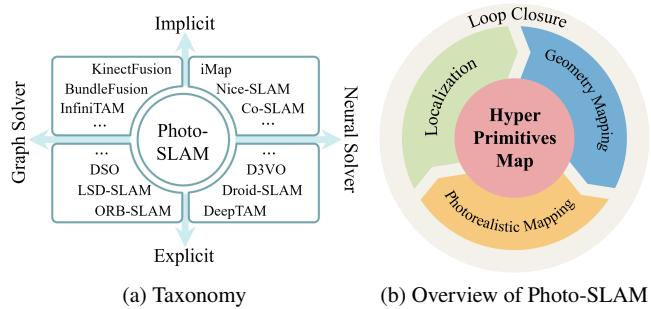
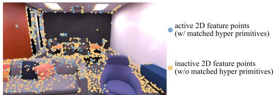
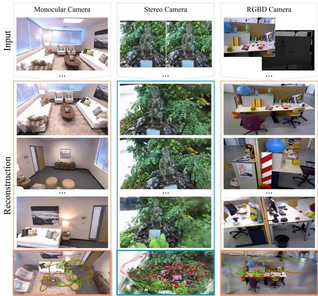
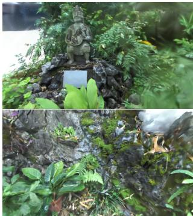

本节目标
读完你应该能：说清「超图元地图（hyper primitives map）」把什么和什么分了开、为什么要这么分；知道三种相机（单目 / 双目 / RGB-D）分别怎么补深度；能复述它跑在 Jetson AGX Orin 上的那几个数字；并理解「显式回环」在这个系列里为什么是个稀缺品。
和前面课程怎么接
延续前两课 0117（MonoGS 用渲染误差反传位姿）与 0118（SplaTAM / GS-SLAM 的增删判据）。这一篇的定位端不走渲染反传，而是回到第三季 0043 ORB-SLAM 那一族的特征法因子图——它是「ORB 定位 + 高斯画质」的混合结构。算力预算这条线则接第二季 0035 Voxblox 的机载约束与第五季 0102 FusionPortable 的评测平台。
1. 为什么这一篇不一样
前面几篇高斯 SLAM 都在比「精度」和「渲染质量」。这一篇的出发点不一样，它开篇就把矛头指向了一个很现实的问题：
「近期把神经渲染与 SLAM 结合的工作展示了很好的前景。然而，现有方法完全依赖隐式表示，资源消耗极大，无法在便携设备上运行，这背离了 SLAM 的初衷。」
这句话说得很重。「SLAM 的初衷」是什么？就是让一台机器人在陌生的环境里自己走、自己看、自己建一张能用的图——而如果这套系统必须绑在一张桌面级大显卡上，那它就只能待在实验室里。论文还进一步列出了隐式表示的几个具体痛点：优化过程耗时；因此不得不引入各种深度来源（RGB-D 相机、稠密光流、单目深度估计）来保证收敛；而且因为特征是被 MLP 解码的，通常还得先划一个包围盒把采样点归一化，这本身就限制了系统的可扩展性。
所以它给出的答案不是「把网络做小」，而是换一种地图的组织方式——这就是下一节的超图元地图。
2. 超图元地图：一次存两遍，各干各的活
先把名字解释一下。「primitive」是「图元」，指三维世界里的一个基本元素（点、面片、椭球都算）。「hyper primitives」直译是「超图元」——它比普通的点图元多带了一堆属性。论文的定义是这样的：
一个超图元里存了什么（原文定义）
一组点云 $\mathbf{P}\in\mathbb{R}^3$，每个点关联着：ORB 特征 $\mathbf{O}\in\mathbb{R}^{256}$、旋转 $\mathbf{r}\in SO(3)$、缩放 $\mathbf{s}\in\mathbb{R}^3$、密度 $\sigma\in\mathbb{R}^1$、以及球谐系数 $\mathrm{SH}\in\mathbb{R}^{16}$。
请盯着这个清单看几秒，你会发现它其实是两套东西被焊在了一起：
位置 $\mathbf{P}$ 和 256 维的 ORB 描述子 $\mathbf{O}$ 是传统视觉 SLAM 的东西。论文说得很明确：ORB 特征「负责建立 2D–2D 与 2D–3D 对应关系」，系统的位姿就是从这些对应关系里用因子图解出来的。
它的特点是稀疏但可靠——一帧图像里能提出来的 ORB 特征通常只有几百到几千个，但它们是被精心挑选过的、可以反复匹配的点。
这四个是3D 高斯的参数（对应上一课 0116 里讲的协方差分解与球谐颜色）。它们只为一件事服务：把场景渲染得好看。
它的特点是稠密但只对渲染负责——这些参数不参与位姿估计，只参与光度损失的反向传播。
换句话说，「定位」和「好看」这两个诉求被拆到了同一张地图的两个字段上。论文在动机里把这场分工的必要性讲得很直接：纯隐式表示「要么慢、要么离不开深度」，而只靠稀疏特征点又「只能给你一张视觉上很朴素的图」。分开存，就两边都拿到。
怎么看这张图：① 上层是稀疏的几何特征——几十个小方块，每个对应一个 ORB 特征点。它稀疏，但每一个都可靠、可匹配，是位姿估计的全部依据；② 下层是稠密的光度特征——铺满整面墙的细密格子，对应球谐系数等纹理参数。它只参与渲染损失的反传，不参与解位姿；③ 中间那根竖线表示这两层描述的是同一个物理表面，只是各存各的、各管各的；④ 为什么要分开？因为两件事的「最优数据结构」不同——定位要的是稀疏可靠、算得快；渲染要的是足够稠密、够细腻。
要记住的一句话：这一篇的贡献不是「用了高斯」，而是承认了「定位」和「画质」是两件事，并且让它们各自拥有自己的数据——这就是「超图元」这个名字里「超」的含义。
下面这张原图是整个系统的结构图，只有四块，非常清爽：

（中译：Photo-SLAM 包含四个主要组件：定位、显式几何建图、隐式照片级建图、回环检测，它们共同维护一张以超图元构成的地图。）
怎么看这张图：① 数一数箭头：四个组件并行跑在四个线程里，共同读写同一张超图元地图（原文原话是「每个组件运行在一个并行线程中，并共同维护一张超图元地图」）；② 注意哪两个组件是「写几何」、哪两个是「用几何」——定位与几何建图负责稀疏特征，光度建图负责稠密外观，回环负责在两者之上做全局修正；③ 请把这张图和上一节的自绘图对起来看：自绘图讲的是「一张地图里存了什么」，这张图讲的是「谁来读写这些字段」。
和前面几课对照：0117 MonoGS 的组件是「跟踪 / 建图 / 关键帧管理 / 新视角合成」但全用同一种表示；这一篇是「定位 / 几何建图 / 光度建图 / 回环」，前两者用显式特征、后两者用隐式高斯——一张系统图就把「分两层」的设计说完了。
3. 单目 / 双目 / RGB-D：三种输入怎么统一
超图元的初始化靠的是「三角化」：当相邻帧之间有足够多的 2D–2D 对应时，系统解出变换矩阵，然后才初始化地图、开始跟踪。这个流程和 ORB-SLAM 一样。
问题出在增密这一步。论文发现一个很有意思的现象：
「实验中发现，一帧里不到 30% 的 2D 几何特征点是「活跃的」（也就是有对应的三维点），在非 RGB-D 的场景下尤其如此。」
这很好理解：3D 点要靠多帧匹配三角化才能生成，纹理弱或者刚出现在视野里的那些特征，还没来得及变成 3D 点。而论文的推理很聪明：
「2D 特征点在一帧里分布密集的地方，本质上就是纹理复杂的区域——而纹理复杂的区域正需要更多的超图元。」所以它反过来用这些尚未激活的特征点去做增密：关键帧一产生，就在这些点上创建临时的超图元。
那么这些临时超图元的「深度」（也就是位置）从哪来？这就是三种相机分道扬镳的地方：
| 输入类型 | 怎么拿到未激活特征点的深度 | 论文原话要点 |
|---|---|---|
| RGB-D | 直接把未激活的 2D 特征点用深度投影到三维 | 「可以直接把未激活的 2D 特征点用深度投影来创建临时超图元」 |
| 单目 | 借邻居：用最近的活跃 2D 特征点的深度来估它自己的深度 | 「对未激活的 2D 特征点，通过解读其最近邻活跃特征点的深度来估计其深度」 |
| 双目 | 用立体匹配算法来估深度 | 「双目场景下，我们依赖立体匹配算法来估计未激活特征点的深度」 |
请注意这套设计的克制之处：它没有引入任何深度网络（不像 0117 之后的 WildGS-SLAM 用 Metric3D，也不像 0119 之外很多工作用单目深度估计器）。单目版本只是「拿最近的邻居的深度当自己的深度」——这个方法粗糙，但它足够便宜，而且后面还有一整套迭代优化在兜底。

（中译：我们利用初始的几何信息来对超图元做稠密化。）
怎么看这张图：① 找到「激活」与「未激活」两类特征点的对照——前者已经有三维点、后者还没有；② 看新增出来的那些临时超图元是从哪冒出来的：正是从「未激活」的那批特征点里来的；③ 论文给的理由在这一节已经讲过：这些点密集的地方就是纹理复杂的地方，而纹理复杂的地方最需要补超图元。
要记住的一句话：这是一种「用几何信息去指导外观表示」的增密思路——和上一课 0118 里 SplaTAM 用剪影、GS-SLAM 用深度差是同一件事的第三种答案。
还有一处值得提的设计是高斯金字塔式训练（Gaussian-Pyramid-based learning）。它的做法是：先把原图反复做高斯平滑与降采样得到一组多尺度图像（金字塔），训练开始时只用最顶层（最模糊、分辨率最低）的那一张当监督，随着迭代进行，逐渐降低层级换成更清晰的图像，直到金字塔底部。默认用 3 层（论文写作 $n=2$）。消融显示：4 层反而会「因增量建图过程中对低层特征过拟合」而变差。这和第三季 0049 DSO 的由粗到细图像金字塔是同一个思路。
4. 凭什么能上嵌入式
先给数字，再说原因——数字是这一课最硬的部分：
| 平台 | 跟踪 FPS | 渲染 FPS | 显存 |
|---|---|---|---|
| Jetson AGX Orin（嵌入式） | 18.315 | 95.057 | 4 GB |
| 笔记本（RTX 3080 Ti） | 19.974 | 353.504 | 4 GB |
| 桌面（RTX 4090） | 41.646 | 911.262 | 6 GB |
这组数字出自 Replica 数据集的单目设定。值得注意的有两点：① 嵌入式平台只要 4 GB 显存，和笔记本一样多；② 从桌面换到 Jetson，跟踪帧率只掉了一半多（41.6 → 18.3），但渲染帧率掉了将近十倍（911 → 95）——说明渲染这一步更吃 GPU，而定位那一步受平台影响较小，这正好印证了「两层分工」的收益。
那具体省在哪儿？我们把论文提到的工程细节归拢一下：
位姿估计靠的是 ORB 特征点的因子图 + Levenberg–Marquardt 优化（重投影误差 + Huber 核），地图侧的几何建图做局部 BA。这条路在 CPU 上就很快，不需要 GPU 参与。
光度建图那一侧才用高斯泼溅的瓦片渲染器。而且论文指出：渲染速度理论上只和当前视野里可见的超图元数量有关，和整张地图的大小无关——这意味着场景变大不会直接拖慢渲染。
论文强调系统「完全用 C++ 与 CUDA 实现」，基于 ORB-SLAM3、3DGS 与 LibTorch 框架。没有整条链路都压在 Python 上。
高斯金字塔式训练让前期的监督信号更「便宜」（低分辨率图像），迭代次数得以摊开；论文也指出，渲染变快以后，同样的在线时间内就能对超图元做更多次迭代优化，「最终带来精度与质量的提升」。
下面这张自绘图把「嵌入式约束」这件事画成一条时间预算：
怎么看这张图：① 上面那台小车代表搭载 Jetson AGX Orin 的机器人平台，旁边是它实测的跟踪帧率、渲染帧率与显存；② 中间那条横条是示意的时间预算，被切成前端 / 建图 / 渲染三段——请注意各段的比例是示意，不是原文数字；③ 下面三行是它真正省下来的地方：定位便宜、渲染与地图规模无关、整条链路是 C++/CUDA。
必须说明的一点：原文只给出了各平台的实测帧率（跟踪 18.315 / 渲染 95.057 FPS 等）与显存占用，并没有给出「前端 / 建图 / 渲染分别占多少毫秒」这样的细分。所以图中横条的三段比例是教学示意，不代表原文数据——这也是本节课要求明确标注的地方。
要记住的一句话：嵌入式实时不是靠某一处优化换来的，而是架构上把「便宜的活」和「贵的活」分开之后自然得到的。
再看效果图。这一张同时展示了三种相机的重建结果，以及渲染帧率的量级：

（中译：渲染与轨迹结果。Photo-SLAM 能用单目、双目与 RGB-D 相机重建高保真的场景视图，而渲染速度最高可达 1000 FPS。）
怎么看这张图：① 请先确认它把三种输入放在了一起展示——这正是这一节的标题；② 注意原图注的用词是「up to 1000 FPS」，这是一个上限（对应桌面 4090 上的 RGB-D 结果 1084.017 FPS），不是所有配置都能达到；③ 图上还叠了轨迹，说明它同时在做定位——渲染结果和轨迹是同一个系统的两种输出。
和上一课的对照：上一课 SplaTAM 也报了 400 FPS 渲染，但那是它自己的渲染器；这里 Photo-SLAM 的高帧率有一半功劳要记在「定位不占用渲染管线」这个架构决定上。
5. 本组唯一显式的回环
这一节要单独讲，因为在这八篇高斯 SLAM 里，只有 Photo-SLAM 明确实现了回环检测（0121 课的 Splat-SLAM 也有，但那已经是 2025 年的工作了，而且它走的是另一条技术路线——DROID 光流 + 全局 BA）。
论文只用了很短一段话交代这件事，但信息量不小：
「回环在 SLAM 中至关重要，因为它有助于解决定位与几何建图过程中累积的误差与漂移。检测到闭合回环之后，我们可以通过相似变换来修正局部关键帧与超图元。有了修正后的相机位姿，光度建图组件就能进一步摆脱里程计漂移造成的鬼影，提升建图质量。」
这里有三个要点：
回环本质上是「认出这里我来过」。认出这件事，靠的是特征描述子的匹配——也就是超图元里那 256 维的 ORB 字段。纯光度/纯高斯的表示要做到这一点要另想办法。
检测到回环后，用相似变换去修正局部关键帧与超图元。单目系统还要顺带把尺度的漂移一起拉回来——这正是第三季 0045 ORB-SLAM 用 sim(3) 修正单目尺度的同一件事。
位姿被拉正之后，光度建图组件会重新优化——论文说这能「摆脱里程计漂移造成的鬼影」。请回忆 0117：高斯地图的「可被扭曲修改」正是它相比网格、体素的一个关键优势。
把这一节和 0118 连起来看就很有意思了：SplaTAM 与 GS-SLAM 都选择了不做回环，把全部火力投在「表示与增删判据」上；而 Photo-SLAM 因为定位端本来就是成熟的 ORB-SLAM3 骨架，回环几乎是「顺手」得到的。这是架构选择带来的红利。但也别忘了代价——它的定位精度上限被特征法锁住了，在无纹理场景里会比不过 0118 里 SplaTAM 那种「亚厘米级、无纹理」的表现。
6. 结果与边界
论文报告的主结果：在 Replica 数据集上，单目配置的 PSNR 达到 33.302（SSIM 0.926、LPIPS 0.078），摘要里的说法是「PSNR 高出 30%、渲染速度快数百倍」。它支持的场景也最广：Replica / TUM（单目、RGB-D）、EuRoC（双目）、以及手持双目相机在户外无边界场景下的建图（见图 9），户外用的是 ZED2 双目相机。

（中译：用一台手持双目相机在户外无边界场景下的建图结果。）
怎么看这张图：① 关键词是「outdoor」与「unbounding」（无边界）——这在本组八篇里是很少见的，后面几课我们会看到，大部分高斯 SLAM 的评测都停在室内数据集（Replica / TUM / ScanNet）；② 输入是手持双目，不是深度相机，也不是固定在车上的激光雷达；③ 这正是第一季 0010 课那句「隐式/稠密方法在大尺度户外的有效性尚未被证明」需要的那种证据形态——不过请注意，这一张是定性的建图结果，论文并没有在户外场景上报告完整的定量基准。
要记住的一句话：「能在户外跑起来」和「在户外被定量证明了」是两回事，读论文时要把这两件事分开看。
消融部分给出了两条很清楚的结论：几何增密（Geo）与高斯金字塔训练（GP）缺一不可。没有 Geo，单目与 RGB-D 的 PSNR 分别掉 2.028 与 1.662，渲染图上会出现天花板一类的伪影；只有 Geo 而没有 GP，则会出现「超图元被增密了、但位置不准、又没优化透，反而变成负担」的情况（单目 PSNR 从 33.302 掉到 20.002）。论文还专门提到：4 层金字塔反而变差，「可能因为增量建图过程中对低层特征过拟合」。
★ 关于「局限」的诚实说明
这篇论文没有单独的「局限性」小节。它的第 5 节标题是 Conclusion，内容只写了贡献与总结，Acknowledgements 之后直接进入参考文献。所以任何「原文承认的局限」其实都是从它的实验范围、消融结论和系统结构里推断出来的，不能说成「原文说」。
可以确定地说出的边界有这些：
① 定位依赖 ORB 几何——因为定位端就是特征法因子图，所以在特征稀少或重复纹理的环境里，它会遇到和传统特征法一样的困难（这也是为什么后面 0121 的 Splat-SLAM 要走「纯 RGB + DROID 光流」那条路）。
② 需要两套表示并存的工程量——超图元里既有 ORB 又有球谐，论文也说明了系统是基于 ORB-SLAM3、3DGS 与 LibTorch 三者拼起来的。
③ 户外结果以定性为主——图 9 展示了手持双目在户外无边界场景的建图，但没有配套的定量基准数字。
互动判断
论文用「未激活的 2D 特征点」（还只有二维、没三角化出三维点的那些）来触发增密。这个做法背后的推理是什么？
互动判断
论文说「渲染速度理论上只和当前视野里可见的超图元数量有关，而与整张地图的大小无关」。这句话为什么对高斯这类表示成立，而对 NeRF 那类隐式表示不成立？
7. 课后练习
练习
- 请解释「超图元（hyper primitive）」这个名字里的「超」指的是什么，并说明这套设计相比「纯隐式表示」和「纯特征点地图」各补上了什么短板。
展开查看答案
「超」指的是一个图元身上挂了两类属性。普通的三维点只有位置；而一个超图元除了位置 $\mathbf{P}$，还挂着 ORB 特征 $\mathbf{O}\in\mathbb{R}^{256}$、旋转 $\mathbf{r}$、缩放 $\mathbf{s}$、密度 $\sigma$、球谐 $\mathrm{SH}\in\mathbb{R}^{16}$。
它补上了纯隐式表示的什么短板：纯隐式（NICE-SLAM、ESLAM 那一类）要沿光线采样、再用 MLP 解码，优化慢；因此不得不引入各种深度来源来保证收敛；而且因为要归一化采样，通常得先定义一个包围盒，限制了可扩展性。论文的原话是这些方法「资源消耗极大，无法在便携设备上运行，背离了 SLAM 的初衷」。
它补上了纯特征点地图的什么短板：传统特征点 SLAM（第三季 0043 ORB-SLAM 那一族）定位很准很快，但地图「视觉上很朴素」——只有稀疏的点，拿不出照片级的视图。而这一篇用同一张地图里的球谐字段来渲染，于是建图结果可以直接给人看。
所以它的分工是：位置 + ORB → 定位要快、要可靠；旋转 + 缩放 + 密度 + 球谐 → 渲染要漂亮。这就是「几何给定位、光度给渲染」。
- 这篇论文在单目、双目、RGB-D 三种输入下，分别怎么给「未激活的 2D 特征点」估深度？并说明它为什么没有采用单目深度估计网络。
展开查看答案
三种做法（均出自论文正文）：① RGB-D——直接用深度把未激活的 2D 特征点投影到三维；② 单目——用「最近的活跃 2D 特征点的深度」来解读出它自己的深度；③ 双目——依赖立体匹配算法来估计。
为什么不用深度网络：论文没有直接解释（原文没有给出理由，我们只能从整体动机推断——这里请把它当作课程判断）。合理的推断有两条：一是论文的核心卖点是「能上嵌入式」，引入一个深度网络会额外占算力和显存，与目标冲突；二是它所处的 2024 年，用预训练深度模型确实是一条现成的路，但那会让系统多一个外部依赖，而这一篇想证明的是「架构层面的分工」本身的价值，不是靠外部大模型来救场。
另外，粗估的深度并不会单独背包袱：这些临时超图元后面会进入光度建图的迭代优化里，被多视角的渲染损失逐步纠正——这也是它敢用「邻居深度」这种粗糙办法的原因。
- 为什么在这一组高斯 SLAM 里，「有回环」是件稀罕事？请结合本课与 0118 的内容说明回环为什么需要显式的几何信息。
展开查看答案
为什么稀罕：上一课的 SplaTAM 与 GS-SLAM 都没有提及实现回环（对比表里这两栏都填的是「未提及」）；0117 的 MonoGS 把「为大尺度场景集成回环」写进了未来工作。也就是说，2024 年这一批高斯 SLAM，大部分把火力集中在「表示」与「增删判据」上，回环被推迟了。
回环为什么需要显式的几何信息：回环的第一步是「认出这里我来过」，也就是要做场景识别——把当前帧和历史上的帧做匹配。这一步需要一个可比较、可索引的描述子。Photo-SLAM 手里正好有：超图元里的 256 维 ORB 特征，本来就是从 ORB-SLAM3 那套体系里来的，匹配与检测回环的基础设施是现成的。
检测到之后还得能改：论文用相似变换修正局部关键帧与超图元——「相似变换」而不是刚体变换，是因为单目存在尺度漂移，必须把尺度一起拉回来。而这一步之所以能生效，靠的又是高斯表示的可扭曲性：位姿改了，地图跟着被搬一下就行（0117 讲过的性质）。论文说，修正之后光度建图组件能进一步「摆脱里程计漂移造成的鬼影」。
一句话总结：回环要「认得出」+「改得动」。前者需要描述子，后者需要可形变的表示。Photo-SLAM 因为定位端是成熟的 ORB-SLAM3 骨架，两样都顺手拿到了。